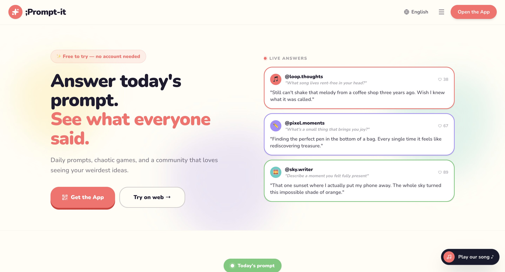
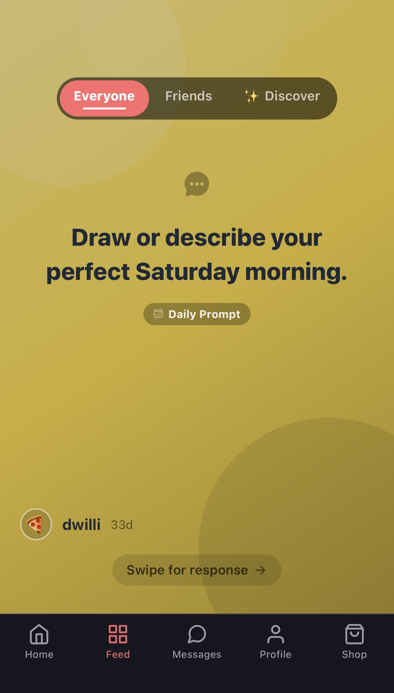
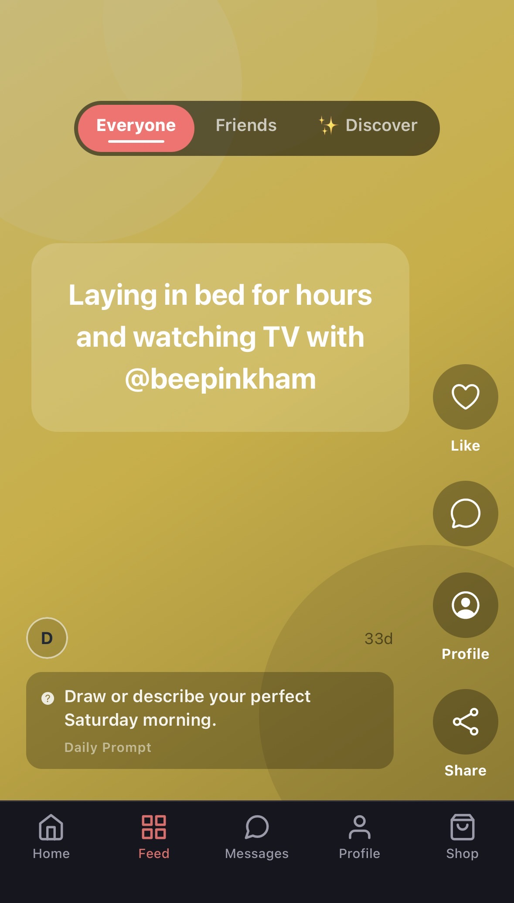
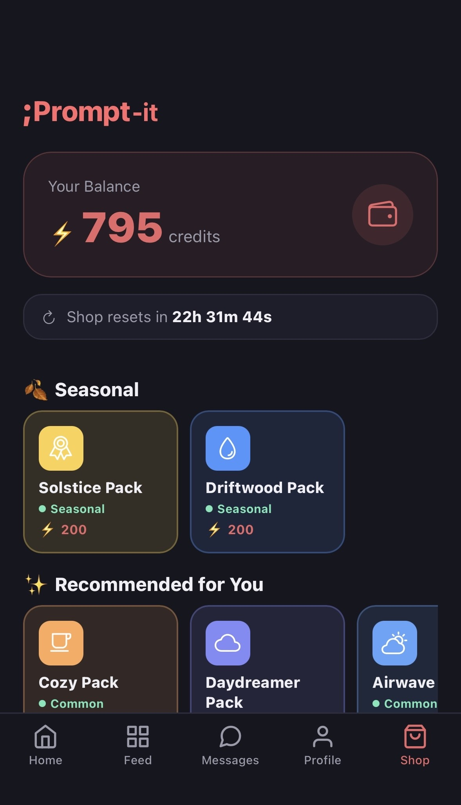

My Role
I am taking ownership of ;Prompt-it as the developer responsible for understanding the existing codebase, documenting how it works, improving the product, and continuing development outside of Replit.
Featured Case Study
;Prompt-it is a live full-stack creativity platform built around daily creative prompts, community responses, friend interactions, a credit-based shop, subscriptions, direct messaging, and real-time creative game modes.
I am taking ownership of ;Prompt-it as the developer responsible for understanding the existing codebase, documenting how it works, improving the product, and continuing development outside of Replit.
Live product and active build. The core flows are functional, including signup, daily prompts, feed, shop, payments, and user interaction.
Stabilizing the product after migration, fixing high-priority risks, documenting the architecture, and preparing the app for future updates.

Overview
;Prompt-it is a daily creativity app where users receive a rotating creative prompt and respond using text, a doodle, or a photo. Those responses are shared in a community feed where friends can react, comment, and like each other’s work.
Beyond the daily prompt loop, the product includes Prompt Party, Storybook Mode, a credit-based economy, an in-app shop, a Plus subscription, direct messaging, a creator ambassador program, and a companion marketing website.
Progress Snapshot
The product existed as a Replit-powered full-stack app with working features, but it needed clearer documentation and migration planning.
I am mapping the architecture, identifying risk areas, documenting the system, and preparing the codebase for long-term development.
Problem
Many people want to be creative, but getting started can feel intimidating. A blank page creates friction, and creativity can become something people keep intending to do but never actually turn into a habit.
;Prompt-it solves this by giving users one small creative starting point each day, multiple ways to respond, and a social layer that makes the habit feel shared instead of isolated.
Target Users
People who want to express themselves but need a low-pressure starting point.
Users who want a more creative way to connect than a normal group chat.
People who want a small daily creative ritual supported by streaks, missions, and rewards.
Core Features
A shared creative prompt gives users one clear starting point each day.
Users can respond in the format that feels most natural to them.
Friends can view, like, comment, and react to each other’s responses.
Friends can message each other and send claimable gift rewards.
Real-time creative game modes give users another reason to return with friends.
A credit economy supports prompt packs, streak items, cosmetics, purchases, and subscription perks.
Product Screens
A closer look at the mobile experience, including the marketing page, daily prompt flow, community feed, and shop system.

The public-facing page introduces the product quickly and gives users a clear next step.

The first feed card keeps interaction focused, playful, and easy to understand.

The feed shows how users browse responses, react, comment, and engage socially.

The shop introduces progression and monetization through credits and prompt collections.
Build Timeline
The project began with the core app structure, database schema, and daily prompt loop.
Friends, feed, reactions, comments, and direct messaging made the app feel alive.
Credits, shop items, missions, streaks, Stripe payments, and Plus were introduced.
Prompt Party and Storybook Mode expanded the product beyond solo daily prompts.
The product moved off Replit so I could document it and continue developing it myself.
UX Decisions
A single daily prompt reduces decision fatigue and gives the community a shared creative focus.
Features are introduced gradually so new users are not overwhelmed during their first session.
The feed focuses on friends to make creative sharing feel more personal, safe, and meaningful.
Text, doodle, and photo responses make the app accessible to different creative styles.
Technical Decisions
Expo and React Native with Expo Router for app navigation.
Express API supporting auth, prompts, submissions, shop, payments, and social systems.
PostgreSQL with Drizzle ORM for schema definition and typed queries.
Stripe Checkout handles credit purchases and the Plus subscription.
Server-Sent Events support live Prompt Party lobby updates.
pnpm workspaces organize the mobile app, API, database, shared libraries, and website.
Migration Off Replit
;Prompt-it was originally built and deployed through Replit. Moving it off Replit means identifying which parts of the app depended on Replit-specific configuration, integrations, routing, environment variables, and workflow setup.
The current migration focus is making sure the database connection, JWT secret, Stripe keys, Twilio and Resend credentials, CORS settings, webhook URLs, and Expo push notification settings are correctly managed outside of Replit.
Outcomes
Mapped frontend, backend, database, payments, and external service dependencies.
Identified user-facing risks, feature dependencies, and next-priority improvements.
Practiced reading, documenting, and improving a larger full-stack codebase.
Next Improvements
High Priority
Add Stripe cancellation and failed payment webhooks, fix refresh token logout behavior, and make shop purchases safer with database transactions.
Medium Priority
Unify JWT verification, improve error handling, and replace fragile startup-time migrations with tracked migration files.
Low Priority
Improve offline states, strengthen creator program logic, and create cleaner long-term architecture documentation.
;Prompt-it represents the kind of work I want to keep doing: building products that combine creativity, UX thinking, technical systems, and real user value.
Back to ProjectsTry It Live
Desktop visitors can interact with a framed preview of the live product below. Since ;Prompt-it is designed as a mobile-first web app, mobile visitors are sent directly to the full experience.
Live Mobile Web App
This preview lets desktop visitors explore the live ;Prompt-it experience in a mobile-sized frame while keeping the full case study context on the page.
On phones, the experience works best when opened directly as the mobile web app.
Open Full ExperienceMobile Experience
Tap below to launch the full mobile web-app experience.
Open ;Prompt-it